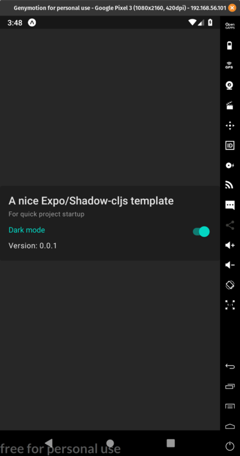

January 26, 2020
A template for Expo apps with Shadow CLJS
Summary
This repo is a template for Expo projects using Shadow CLJS. By cloning this repo and following the starter instructions in the readme you will be all setup to starting making a cross platform native app using Clojure.
Benefits
This project has an opinionated set of all the necessary dependencies for an expo project written in cljs.
- Staple libraries Specter, Spec-tools, and Camel-snake-kebab
- Re-frame for state management
- Unit tests for re-frame handlers and subscriptions using shadow-cljs node tests configuration
- CircleCI setup for unit tests (no expo build or publishing yet)
- Dependabot for javascript deps
- Navigation using react-native-router-flux
- A nice component library with an example of toggling dark mode
